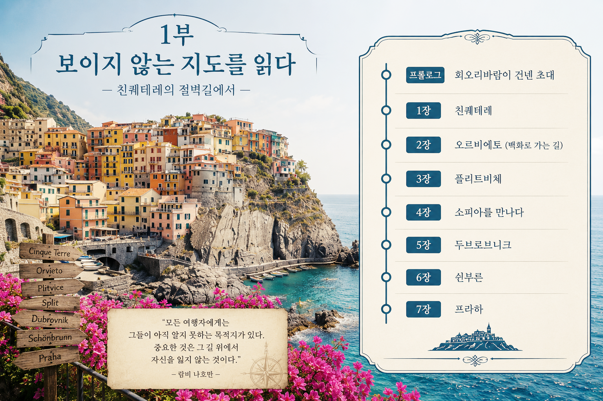
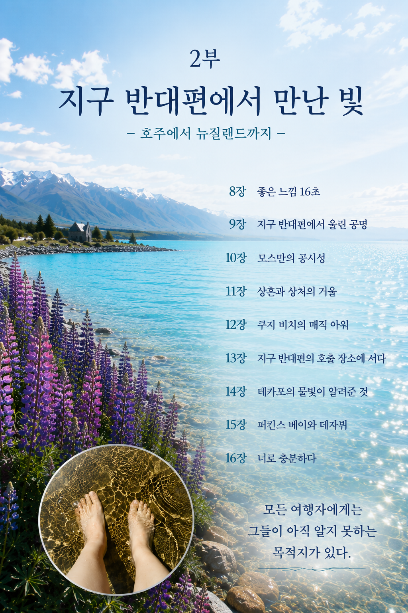
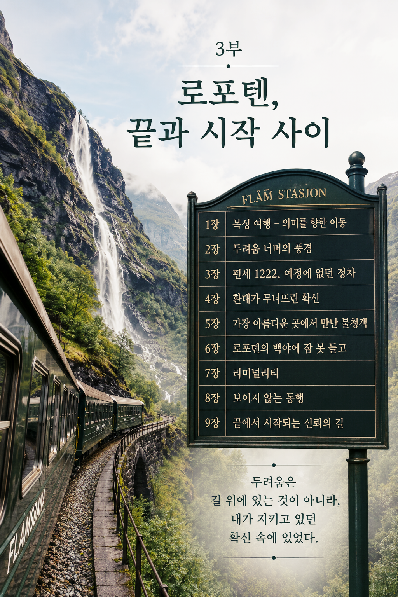
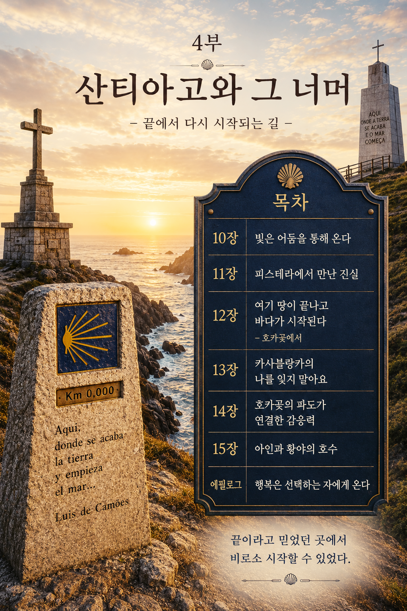

프롤로그 · 회오리바람이 건넨 초대
1장 · 친퀘테레
2장 · 오르비에토 (백화로 가는 길)
3장 · 플리트비체
4장 · 소피아를 만나다
5장 · 두브로브니크
6장 · 쇤부른
7장 · 프라하
"모든 여행자에게는 그들이 아직 알지 못하는 목적지가 있다.
중요한 것은 그 길 위에서 자신을 잃지 않는 것이다."
— 랍비 나흐만 —

8장 · 좋은 느낌 16초
9장 · 지구 반대편에서 울린 공명
10장 · 모스만의 공시성
11장 · 상흔과 상처의 거울
12장 · 쿠지 비치의 매직 아워
13장 · 지구 반대편의 호출 장소에 서다
14장 · 테카포의 물빛이 알려준 것
15장 · 퍼킨스 베이와 데자뷔
16장 · 너로 충분하다

1장 · 목성 여행 - 의미를 향한 이동
2장 · 두려움 너머의 풍경
3장 · 핀세 1222, 예정에 없던 정차
4장 · 환대가 무너뜨린 확신
5장 · 가장 아름다운 곳에서 만난 불청객
6장 · 로포텐의 백야에 잠 못 들고
7장 · 리미널리티
8장 · 보이지 않는 동행
9장 · 끝에서 시작되는 신뢰의 길
두려움은 길 위에 있는 것이 아니라,
내가 지키고 있던 확신 속에 있었다.

10장 · 빛은 어둠을 통해 온다
11장 · 피스테라에서 만난 진실
12장 · 여기 땅이 끝나고 바다가 시작된다 — 호카곶에서
13장 · 카사블랑카의 나를 잊지 말아요
14장 · 호카곶의 파도가 연결한 감응력
15장 · 아인과 황야의 호수
에필로그 · 행복은 선택하는 자에게 온다
끝이라고 믿었던 곳에서 비로소 시작할 수 있었다.